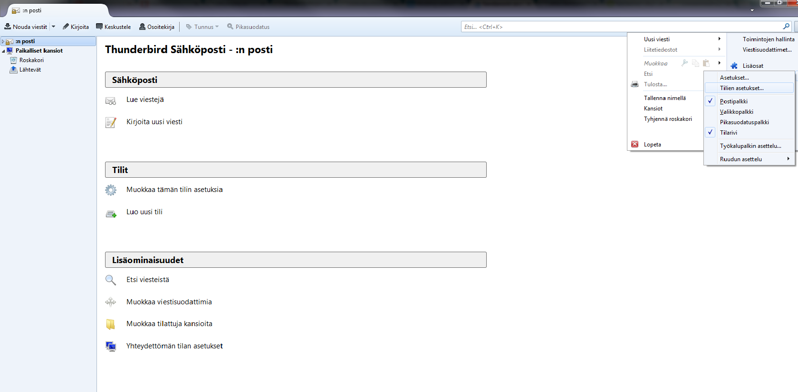
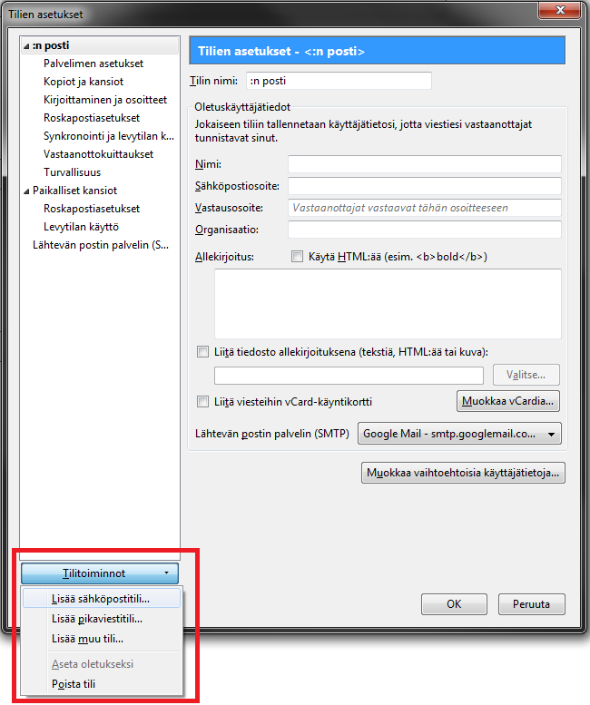
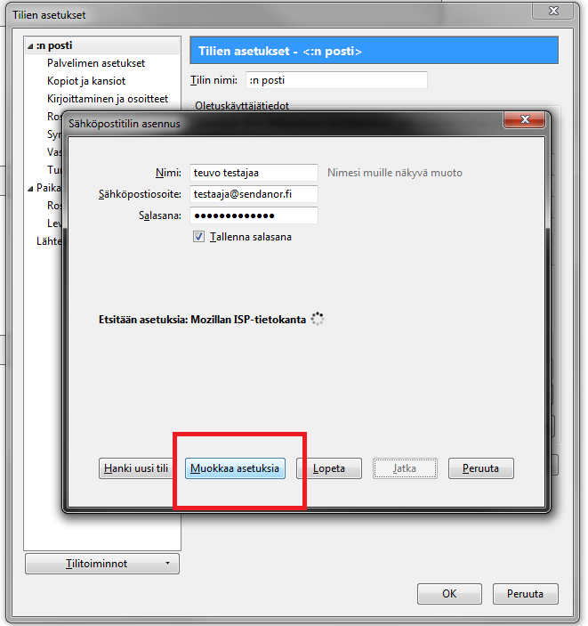
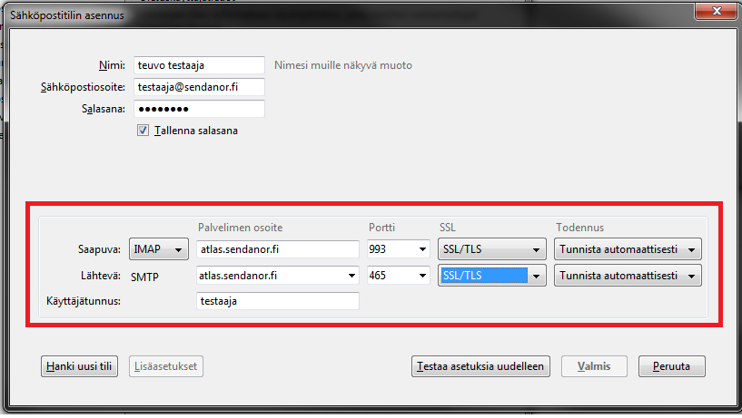

Sähköpostiasetusten asettaminen Mozilla Thunderbirdillä
Mozilla Thunderbird on ilmainen sähköpostiohjelmisto joka toimii windowsilla, mac os x:llä ja linuxilla. Tämä ohje on tarkoitettu helpottamaan sähköpostin käyttöönottamista.
Huom! Ohjeessa on käytetty atlas.sendanor.fi osoitetta mutta samat asetukset toimivat myös titan.sendanor.fi osoitteella.
Tilin asetukset löytyvät asetusvalikosta kohdasta Tilien asetukset.
Tilitoiminnot kohdasta voit lisätä uuden sähköpostitilin käyttöösi.
Aseta oikeat tiedot (nimi, sähköposti ja salasana) paina ensin jatka ja sitten muokkaa asetuksia.
Saapuvan sähköpostin palvelimen osoite on atlas.sendanor.fi (tai titan.sendanor.fi)
saapuvan sähköpostin IMAP portti on 993 POP3 portti on 995
Lähtevän sähköpostin SMTP portit ovat 465 (SSL) 25, 2525, 20025 (TSL)
Huom! Porttia 25 käytettäessä vain sendanorin verkosta tulevat yhteydet ovat sallittuja ilman autentikointia.
Lähtevään sähköpostiin voi käyttää myös oman internet-palveluntarjoajan lähtevän sähköpostin palvelinta.
